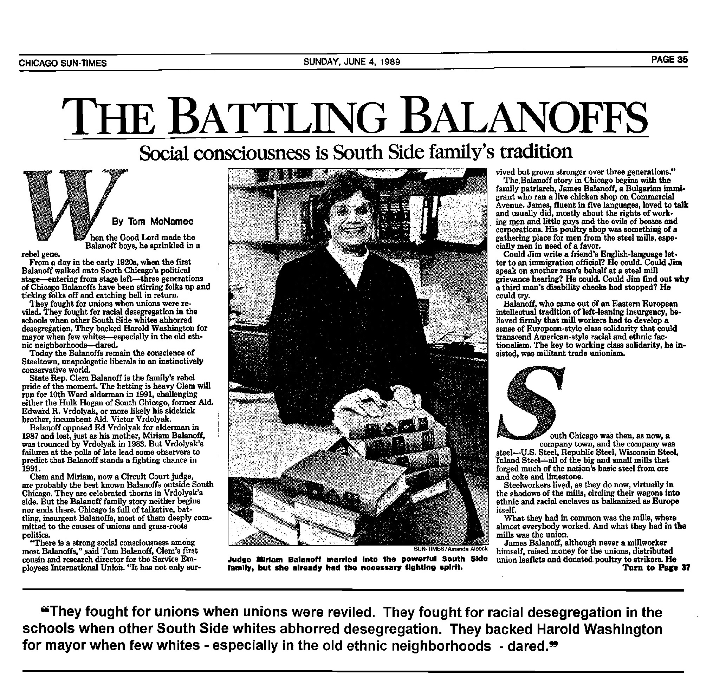
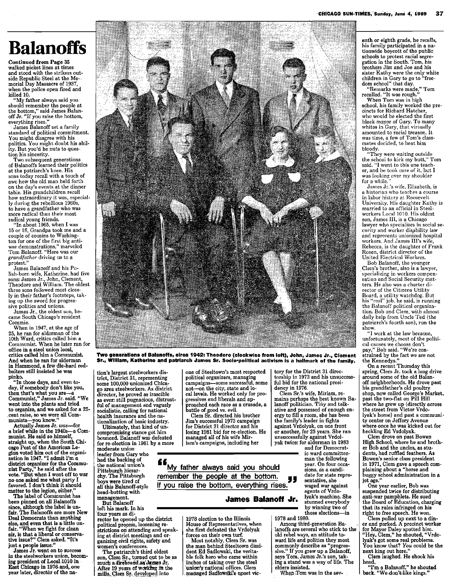

A Legacy of Service
The Balanoff Family
Fighting for working people of Chicago since the 1960s, from the steel mills to the statehouse to the courts.
Our Story
Fighting for Workers' Rights
For more than sixty years, the Balanoffs have stood with working people. The family's roots run through the mills and neighborhoods of Chicago's South Side, where a tradition of social conscience took hold in the 1960s and never let go. They fought for the desegregation of the schools, backed Harold Washington for mayor when few in the old neighborhoods dared, and threw themselves into the great causes of their time, civil rights, the anti-war movement, and above all the labor movement.
That fight began in the steel mills. Jim Balanoff ran for Director of District 31 of the United Steelworkers of America alongside the reform candidate Ed Sadlowski, on a simple promise to ordinary workers. It's time to fight back. From those union halls to the present day, three generations have carried that same spirit into public life.
In the Press
"The Battling Balanoffs"
In 1989, the Chicago Sun-Times profiled the family under the headline "The Battling Balanoffs," calling social consciousness a South Side family's tradition.


Miriam Balanoff
A Voice for Justice in the Courts
Miriam Balanoff broke barriers as a progressive candidate and a fierce opponent of the political machine led by Ed Vrdolyak. She won two terms as an Illinois State Representative, where she championed social justice and government accountability. A committed advocate of the Equal Rights Amendment, she introduced the Employer Relocation Act, which would have required companies to give advance notice before closing, guarantee severance pay, and contribute to a community fund for job retraining and development.
In the 1986 general election, with the backing of Mayor Harold Washington, whom she had supported, she was elected to a judgeship on the Circuit Court of Cook County, carrying her commitment to fairness from the legislature to the bench.
On the floor of the Illinois House
Addressing a rally

Rallying to keep the hospital open
Tom Balanoff
SEIU President Emeritus
As President Emeritus, Tom Balanoff has been an active force in the labor movement for 50 years. He saw the world with the mind of an activist from a young age, and his family's deep engagement in the anti-war, civil rights, and labor movements shaped his path toward becoming one of the longest-serving leaders for working families.
After years building strategic campaigns that strengthened working communities, Tom moved to Chicago in 1993 to become Local 73 Trustee, and was elected its president in 1994. He joined the SEIU International Executive Board in 1995 and became an SEIU Vice President a year later. As president of the SEIU Illinois State Council, he saw its membership grow by 90,000 in five years, restructuring the union into industry-based locals and winning rights for more than 100,000 low-wage workers in the healthcare and childcare industries.
In his own words
Rallying SEIU members for justice
Speaking for working families
Clem Balanoff
National Political Director, Amalgamated Transit Union
Clem Balanoff has carried the family's commitment to working people into a lifetime of public service and organizing. Today he serves as the National Political Director for the Amalgamated Transit Union, advancing the interests of the transit workers who keep America moving.
From the steel mills to the national stage, Clem remains, like the generations before him, in the fight for the rights and dignity of working families.
Interview with Clem and Our Revolution
Bob Balanoff
Retired Judge, Circuit Court of Cook County
Bob Balanoff served the people of Cook County from the bench as a judge of the Circuit Court, now retired. Like his mother Miriam, he brought the family's lifelong belief in fairness and justice into the courtroom, where it mattered most for the ordinary people who came before him.
His career is one more chapter in a story that spans three generations, a family that has never stopped working for the people of Chicago.